Top Masteries
 By
Amir96lx
By
Amir96lx
Contents
- Intro
- Current Champions
- Notable Milestones
-
Category Rankings
- Total Awards
- Total Awards (Excluding Hacks)
- Event Awards
- Site Awards
- Hack Awards
- Homebrew Awards
- Subset Awards
- Amstrad CPC
- Apple II
- Arcade
- Arcadia 2001
- Arduboy
- Atari 2600
- Atari Jaguar CD
- Dreamcast
- Elektor TV Games Computer
- Fairchild Channel F
- Game Boy
- Game Boy Advance
- Game Boy Color
- Game Gear
- GameCube
- Interton VC 4000
- Master System
- Mega Drive
- Mega Duck
- Nintendo 64
- NES
- Nintendo DS
- Nintendo DSi
- PC Engine
- PC Engine CD
- PC-8000/8800
- PlayStation
- PlayStation 2
- PlayStation Portable
- Pokémon Mini
- Sega Saturn
- Sega CD
- SG-1000
- SNES
- Uzebox
- Virtual Boy
- WASM-4
- Watara Supervision
Intro
We are going to take a look at another metric for greatness, Mastery Awards. Mastery awards are given to users when they complete every achievement for a given set in hardcore mode. Users wear mastery awards as a badge of honor on their profile page representing all the hard work they put into truly becoming a master of the game.
Below we will take a look at which users rank among the best with the most mastery awards in several categories well as notable updates from the previous month to each individual category. Check to see how you rank among the rest of the community members.
Special thanks to  Nydaxn for creating the ranking image templates.
Nydaxn for creating the ranking image templates.
* Data as of February 1st 2025.
Current Champions
 Total Awards
Total Awards 3DO Interactive Multiplayer
3DO Interactive Multiplayer HotCoffee
HotCoffee Amstrad CPC
Amstrad CPC Apple II
Apple II Arcade
Arcade Arcadia 2001
Arcadia 2001 Arduboy
Arduboy Atari 2600
Atari 2600 Atari 7800
Atari 7800 Atari Jaguar
Atari Jaguar Atari Jaguar CD
Atari Jaguar CD Atari Lynx
Atari Lynx ColecoVision
ColecoVision Dreamcast
Dreamcast Elektor TV Games Computer
Elektor TV Games Computer Fairchild Channel F
Fairchild Channel F Game Boy
Game Boy Game Boy Advance
Game Boy Advance Game Boy Color
Game Boy Color Game Gear
Game Gear GameCube
GameCube Intellivision
Intellivision Interton VC 4000
Interton VC 4000 wizface2137
wizface2137 Magnavox Odyssey 2
Magnavox Odyssey 2 Master System
Master System Genesis/Mega Drive
Genesis/Mega Drive Mega Duck
Mega Duck MSX
MSX Nintendo 64
Nintendo 64 Neo Geo CD
Neo Geo CD Neo Geo Pocket
Neo Geo Pocket MelodyAsh
MelodyAsh NES/Famicom
NES/Famicom Nintendo DS
Nintendo DS Nintendo DSi
Nintendo DSi PC Engine/TurboGrafx-16
PC Engine/TurboGrafx-16 PC Engine CD/TurboGrafx-CD
PC Engine CD/TurboGrafx-CD PC-8000/8800
PC-8000/8800 PC-FX
PC-FX PlayStation
PlayStation PlayStation 2
PlayStation 2 PlayStation Portable
PlayStation Portable Pokémon Mini
Pokémon Mini Sega 32X
Sega 32X Sega CD
Sega CD SG-1000
SG-1000 SNES/Super Famicom
SNES/Super Famicom Uzebox
Uzebox Vectrex
Vectrex Eeroz
Eeroz Virtual Boy
Virtual Boy WASM-4
WASM-4 Watara Supervision
Watara Supervision WonderSwan
WonderSwanNotable Milestones
1400 Mastery Awards
| Amir96lx |
1100 Mastery Awards
 Sarconius Sarconius |
 Whoops Whoops |
800 Mastery Awards
 ChocoMilk ChocoMilk |
 MaddieKittyTV MaddieKittyTV |
500 Mastery Awards
 GregHouse007 GregHouse007 |
 SuperMeatBro SuperMeatBro |
400 Mastery Awards
 adamjohnny5 adamjohnny5 |
 Adenothe Adenothe |
 Kofigao Kofigao |
300 Mastery Awards
 ElMullet ElMullet |
 REMLEZAR REMLEZAR |
 RevJohn RevJohn |
200 Mastery Awards
 Appotheozz Appotheozz |
 AstroFennec AstroFennec |
 CassetteCobra CassetteCobra |
 CMatador CMatador |
 DeeCee DeeCee |
 eazytheskeazy eazytheskeazy |
 Kijin Kijin |
eazytheskeazy |
Kijin |
 KollegaKot KollegaKot |
 Lockerdown3 Lockerdown3 |
 Natista Natista |
 ramiroabreu ramiroabreu |
 Scoobynate1313 Scoobynate1313 |
 sireture sireture |
100 Mastery Awards
 abdalin
abdalin alundra82
alundra82 Antrax
Antrax ArandomPikachu
ArandomPikachu Asahina
Asahina authorblues
authorblues benit149
benit149 bezileon
bezileon BlueShellBeast
BlueShellBeast Bubzia
Bubzia CMinusMinus
CMinusMinus cutegirlclover
cutegirlclover daphnesmash
daphnesmash Distort8936
Distort8936 DJSergeich
DJSergeich EfeNeptuno
EfeNeptuno Elainatg433
Elainatg433 FerretPlayingPS4
FerretPlayingPS4 JAM
JAM JeanBlasay
JeanBlasay Labuff
Labuff Lasertronic
Lasertronic Legendarylink0
Legendarylink0 LilliesMADs
LilliesMADs lypsix
lypsix Maniatikiller
Maniatikiller MisterNigth
MisterNigth MUPPY
MUPPY NimbusSpark
NimbusSpark RANGO666
RANGO666 Remydoodle
Remydoodle RetKonRow
RetKonRow scatter
scatter shroome
shroome SomeGirl
SomeGirl supersharpy64
supersharpy64 SwanMuffin27
SwanMuffin27 tininsteelian
tininsteelian usedpizza
usedpizza Verros
Verros yendihunt
yendihunt YoshioFruit
YoshioFruit zenanomaly
zenanomalyCategory Rankings
Total Awards
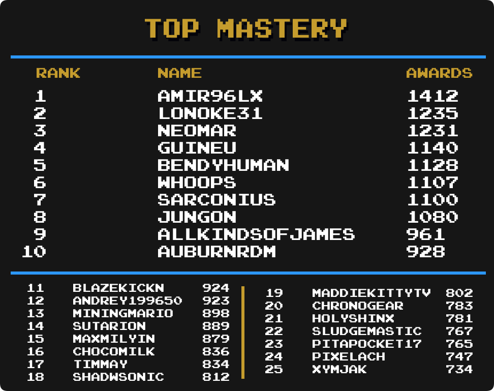
-
Amir96lx remains in 1st with 1412 total mastery awards.
-
 Blazekickn has moved up 1 spot and is in 11th place.
Blazekickn has moved up 1 spot and is in 11th place. -
 MiningMario has moved up 1 spot and is in 13th place.
MiningMario has moved up 1 spot and is in 13th place. -
 Sutarion has moved up 1 spot and is in 14th place.
Sutarion has moved up 1 spot and is in 14th place. -
ChocoMilk has moved up 3 spots and is in 16th place.
-
 HolyShinx has moved up 1 spot and is in 21st place.
HolyShinx has moved up 1 spot and is in 21st place. -
 Pixelach has moved up 1 spot and is in 24th place.
Pixelach has moved up 1 spot and is in 24th place.
Total Awards (Excluding Hacks)
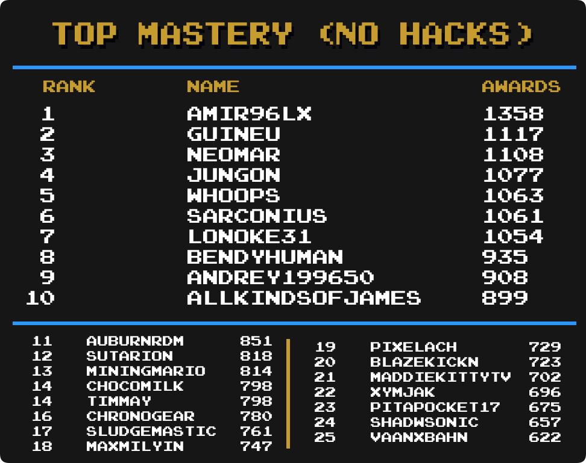
-
Amir96lx remains in 1st with 1358 total mastery awards.
-
 Andrey199650 has moved up 1 spot and is in 9th place.
Andrey199650 has moved up 1 spot and is in 9th place. -
Sutarion has moved up 1 spot and is in 12th place.
-
ChocoMilk has moved up 2 spots and is tied for 14th place.
-
 sludgemastic has moved up 1 spot and is in 17th place.
sludgemastic has moved up 1 spot and is in 17th place. -
Pixelach has moved up 1 spot and is in 19th place.
-
 pitapocket17 has moved up 1 spot and is in 23rd place.
pitapocket17 has moved up 1 spot and is in 23rd place. -
 vaanxbahn has made it into the top 25 and is in 25th place.
vaanxbahn has made it into the top 25 and is in 25th place.
Event Awards
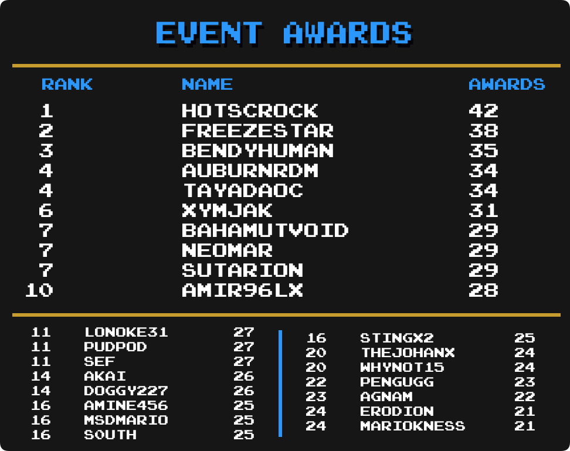
-
 Hotscrock remains in 1st with 42 total mastery awards.
Hotscrock remains in 1st with 42 total mastery awards. -
 AuburnRDM has moved up 1 spot and is tied for 4th place.
AuburnRDM has moved up 1 spot and is tied for 4th place. -
 BahamutVoid has moved up 2 spots and is in a 3-way tie for 7th place.
BahamutVoid has moved up 2 spots and is in a 3-way tie for 7th place. -
 msdmario has moved up 1 spot and is in a 4-way tie for 16th place.
msdmario has moved up 1 spot and is in a 4-way tie for 16th place.
Site Awards
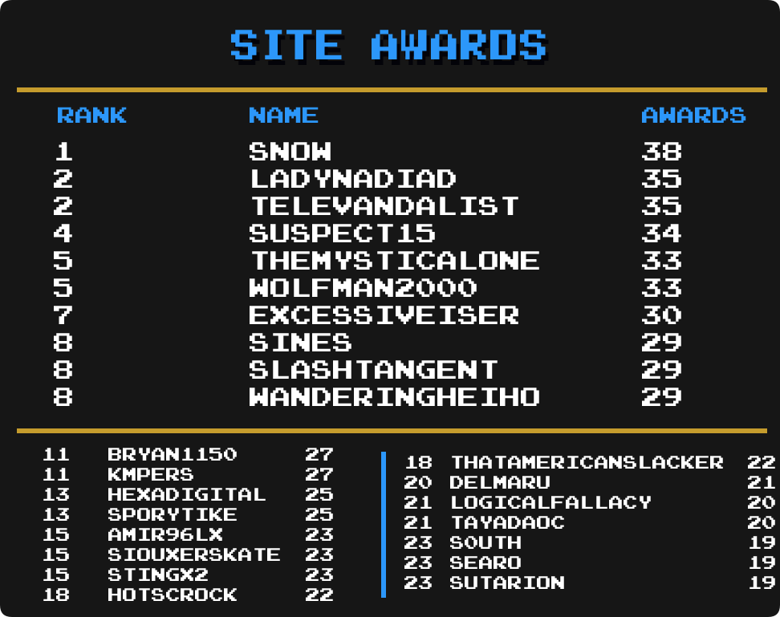
-
 Snow remains in 1st with 38 total mastery awards.
Snow remains in 1st with 38 total mastery awards. -
 ladynadiad has moved up 1 spot and is tied for 2nd place.
ladynadiad has moved up 1 spot and is tied for 2nd place. -
 Excessiveiser has moved up 1 spot and is in 7th place.
Excessiveiser has moved up 1 spot and is in 7th place. -
 Sines has moved up 1 spot and is in a 3-way tie for 8th place.
Sines has moved up 1 spot and is in a 3-way tie for 8th place. -
 SlashTangent has moved up 1 spot and is in a 3-way tie for 8th place.
SlashTangent has moved up 1 spot and is in a 3-way tie for 8th place. -
 WanderingHeiho has moved up 1 spot and is in a 3-way tie for 8th place.
WanderingHeiho has moved up 1 spot and is in a 3-way tie for 8th place. -
 Bryan1150 has moved up 1 spot and is tied for 11th place.
Bryan1150 has moved up 1 spot and is tied for 11th place. -
 kmpers has moved up 3 spots and is tied for 11th place.
kmpers has moved up 3 spots and is tied for 11th place. -
 Hexadigital has moved up 1 spot and is tied for 13th place.
Hexadigital has moved up 1 spot and is tied for 13th place. -
Amir96lx has moved up 2 spots and is in a 3-way tie for 15th place.
-
 StingX2 has moved up 1 spot and is in a 3-way tie for 15th place.
StingX2 has moved up 1 spot and is in a 3-way tie for 15th place. -
Hotscrock has moved up 3 spots and is tied for 18th place.
-
 LogicalFallacy has moved up 1 spot and is tied for 21st place.
LogicalFallacy has moved up 1 spot and is tied for 21st place. -
 Tayadaoc has moved up 1 spot and is tied for 21st place.
Tayadaoc has moved up 1 spot and is tied for 21st place. -
 s0uth has made it into the top 25 and is in a 4-way tie for 23rd place.
s0uth has made it into the top 25 and is in a 4-way tie for 23rd place. -
 Searo has made it into the top 25 and is in a 4-way tie for 23rd place.
Searo has made it into the top 25 and is in a 4-way tie for 23rd place. -
Sutarion has made it into the top 25 and is in a 4-way tie for 23rd place.
Hack Awards
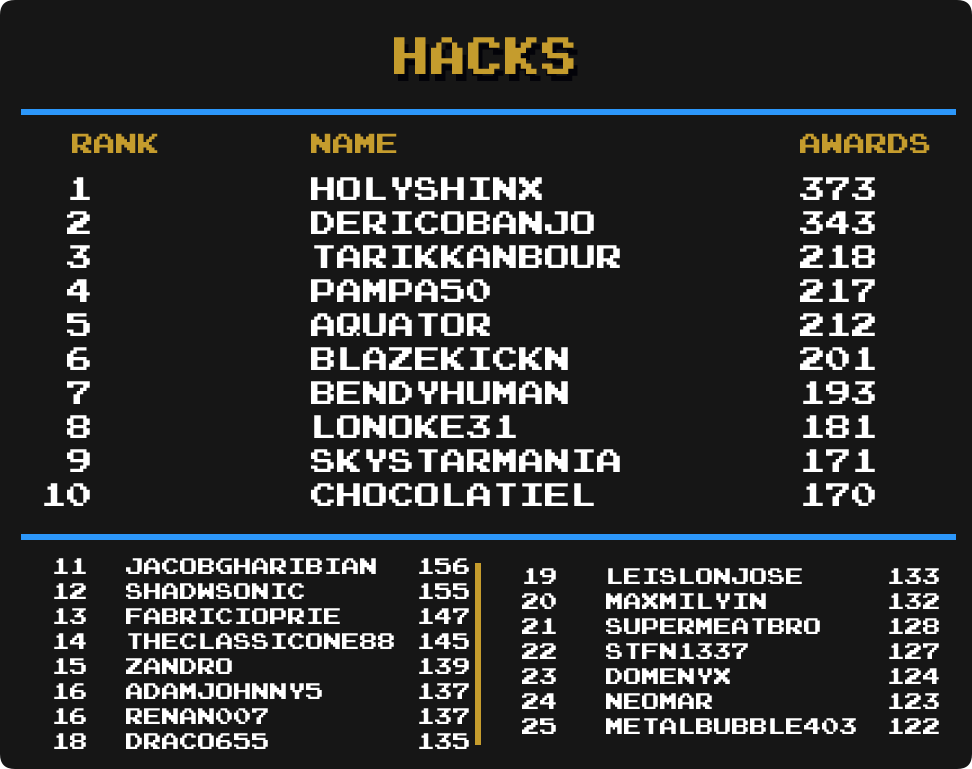
-
HolyShinx remains in 1st with 373 total mastery awards.
-
 Tarikkanbour has moved up 2 spots and is in 3rd place.
Tarikkanbour has moved up 2 spots and is in 3rd place. -
 Draco655 has moved up 2 spots and is in 18th place.
Draco655 has moved up 2 spots and is in 18th place. -
SuperMeatBro has moved up 1 spot and is in 21st place.
Homebrew Awards
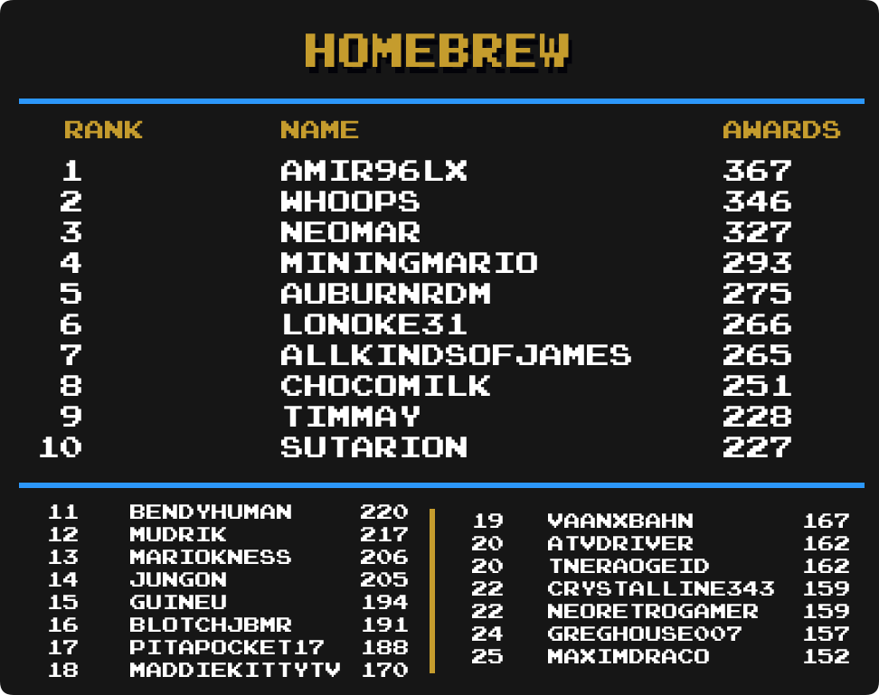
-
Amir96lx remains in 1st with 367 total mastery awards.
-
 Lonoke31 has moved up 1 spot and is in 6th place.
Lonoke31 has moved up 1 spot and is in 6th place. -
 Timmay has moved up 1 spot and is in 9th place.
Timmay has moved up 1 spot and is in 9th place. -
 MarioKness has moved up 1 spot and is in 13th place.
MarioKness has moved up 1 spot and is in 13th place. -
pitapocket17 has moved up 1 spot and is in 17th place.
-
vaanxbahn has made it into the top 25 and is in 19th place.
-
 atvdriver has moved up 1 spot and is tied for 20th place.
atvdriver has moved up 1 spot and is tied for 20th place. -
 NeoRetroGamer has moved up 2 spots and is tied for 22nd place.
NeoRetroGamer has moved up 2 spots and is tied for 22nd place. -
GregHouse007 has made it into the top 25 and is in 24th place.
Subset Awards
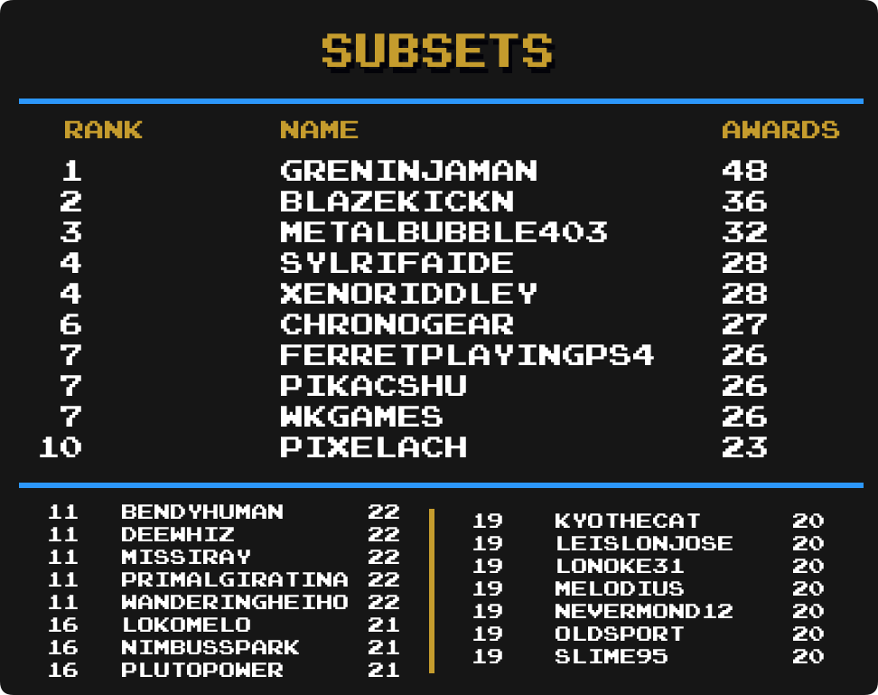
-
 GreninjaMan remains in 1st with 48 total mastery awards.
GreninjaMan remains in 1st with 48 total mastery awards. -
 xenoriddley has moved up 1 spot and is tied for 4th place.
xenoriddley has moved up 1 spot and is tied for 4th place. -
 KyoTheCat has moved up 6 spots and is in a 8-way tie for 19th place.
KyoTheCat has moved up 6 spots and is in a 8-way tie for 19th place. -
 OldSport has made it into the top 25 and is in a 8-way tie for 19th place.
OldSport has made it into the top 25 and is in a 8-way tie for 19th place. -
 Slime95 has made it into the top 25 and is in a 8-way tie for 19th place.
Slime95 has made it into the top 25 and is in a 8-way tie for 19th place.
Amstrad CPC
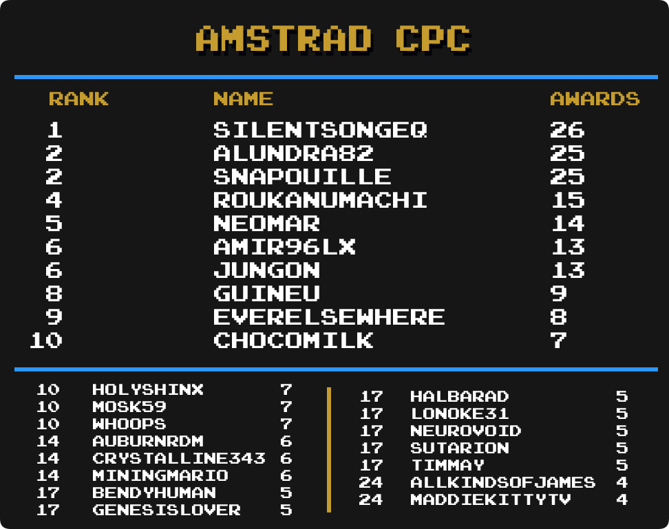
-
 SilentsongEQ remains in 1st with 26 total mastery awards.
SilentsongEQ remains in 1st with 26 total mastery awards. -
 NEOMAR has moved up 1 spot and is in 5th place.
NEOMAR has moved up 1 spot and is in 5th place. -
ChocoMilk has moved up 4 spots and is in a 4-way tie for 10th place.
Apple II
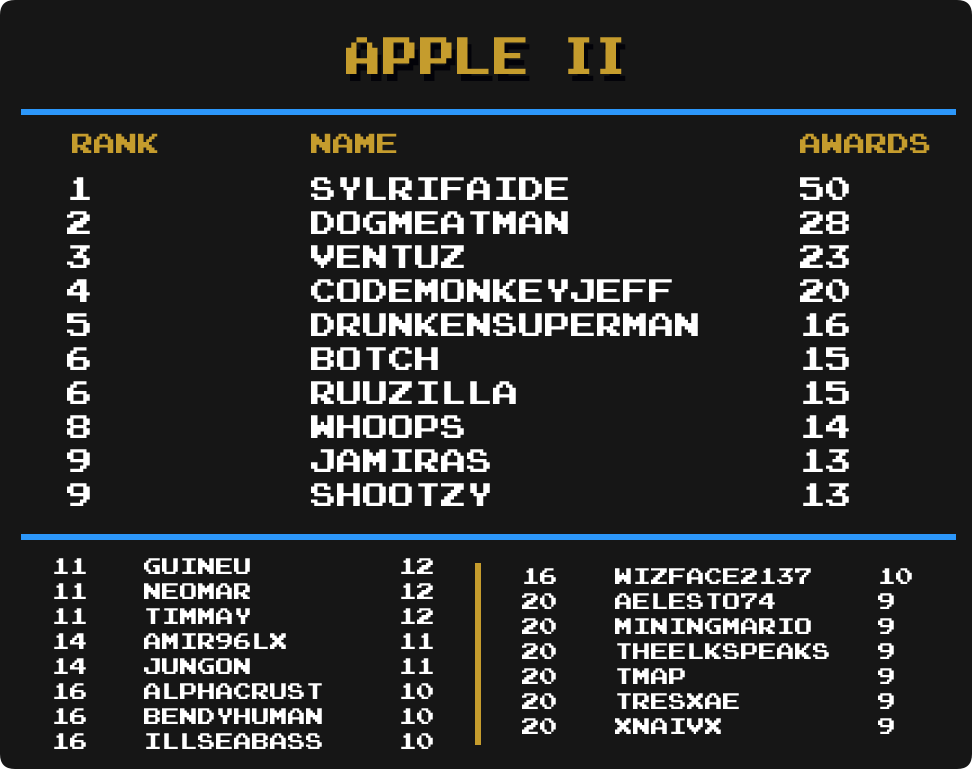
-
 Sylrifaide remains in 1st with 50 total mastery awards.
Sylrifaide remains in 1st with 50 total mastery awards. -
 Jamiras has moved up 2 spots and is tied for 9th place.
Jamiras has moved up 2 spots and is tied for 9th place.
Arcade
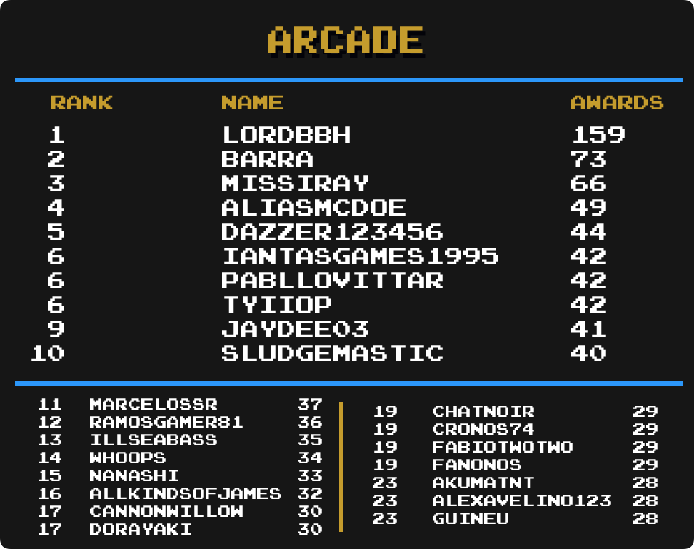
-
 LordBBH remains in 1st with 159 total mastery awards.
LordBBH remains in 1st with 159 total mastery awards. -
 AliasMcDoe has moved up 1 spot and is in 4th place.
AliasMcDoe has moved up 1 spot and is in 4th place. -
 Dazzer123456 has moved up 4 spots and is in 5th place.
Dazzer123456 has moved up 4 spots and is in 5th place. -
 jaydee03 has moved up 1 spot and is in 9th place.
jaydee03 has moved up 1 spot and is in 9th place. -
sludgemastic has moved up 1 spot and is in 10th place.
-
 MarceloSSR has moved up 1 spot and is in 11th place.
MarceloSSR has moved up 1 spot and is in 11th place. -
 ramosgamer81 has moved up 1 spot and is in 12th place.
ramosgamer81 has moved up 1 spot and is in 12th place. -
 ILLSeaBass has moved up 1 spot and is in 13th place.
ILLSeaBass has moved up 1 spot and is in 13th place. -
Whoops has moved up 1 spot and is in 14th place.
-
 Nanashi has moved up 7 spots and is in 15th place.
Nanashi has moved up 7 spots and is in 15th place. -
 cannonwillow has made it into the top 25 and is tied for 17th place.
cannonwillow has made it into the top 25 and is tied for 17th place. -
 dorayaki has moved up 1 spot and is tied for 17th place.
dorayaki has moved up 1 spot and is tied for 17th place.
Arcadia 2001
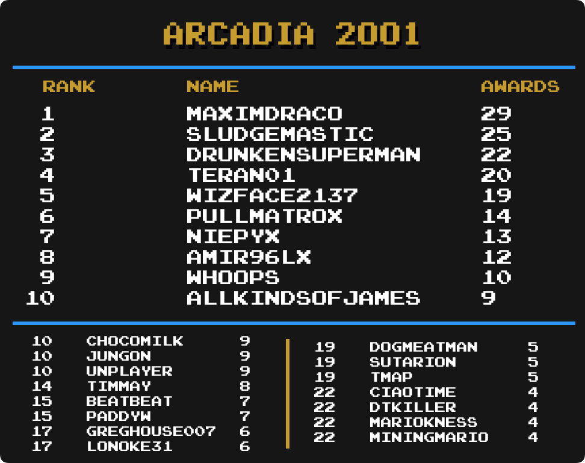
-
 Maximdraco remains in 1st with 29 total mastery awards.
Maximdraco remains in 1st with 29 total mastery awards. -
 beatbeat has made it into the top 25 and is tied for 15th place.
beatbeat has made it into the top 25 and is tied for 15th place. -
 CiaoTime has made it into the top 25 and is in a 10-way tie for 22nd place.
CiaoTime has made it into the top 25 and is in a 10-way tie for 22nd place.
Arduboy
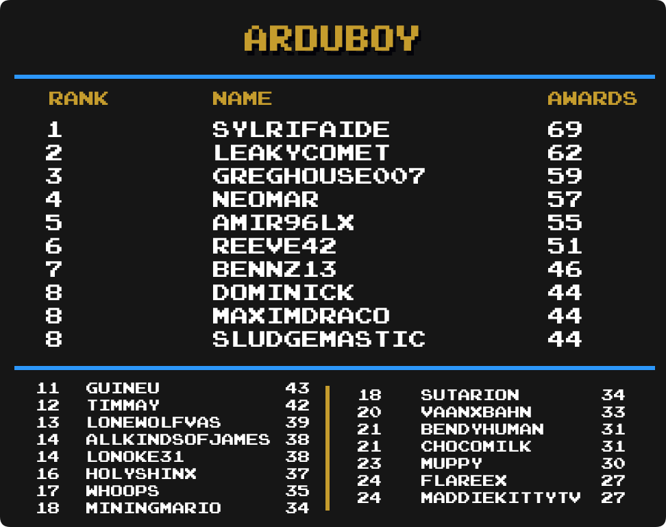
-
Sylrifaide remains in 1st with 69 total mastery awards.
-
 Dominick has moved up 1 spot and is in a 3-way tie for 8th place.
Dominick has moved up 1 spot and is in a 3-way tie for 8th place. -
Maximdraco has moved up 6 spots and is in a 3-way tie for 8th place.
-
sludgemastic has moved up 9 spots and is in a 3-way tie for 8th place.
-
ChocoMilk has moved up 1 spot and is tied for 21st place.
Atari 2600
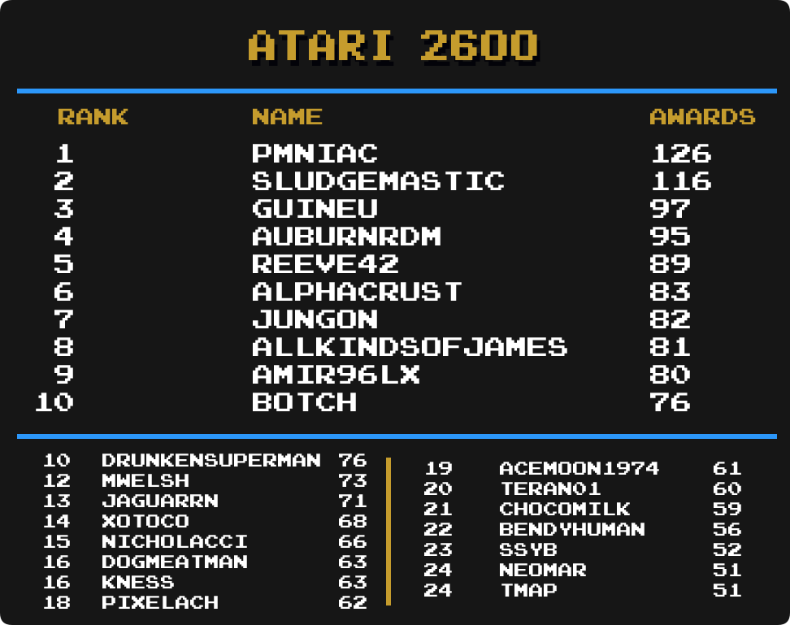
-
 PMniac remains in 1st with 126 total mastery awards.
PMniac remains in 1st with 126 total mastery awards. -
 KNess has moved up 2 spots and is tied for 16th place.
KNess has moved up 2 spots and is tied for 16th place. -
ChocoMilk has moved up 1 spot and is in 21st place.
Atari Jaguar CD
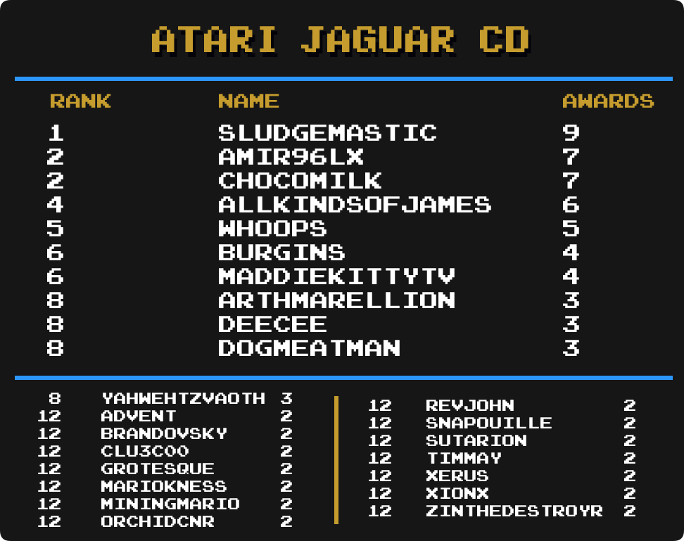
-
sludgemastic remains in 1st with 9 total mastery awards.
-
DeeCee has made it into the top 25 and is in a 4-way tie for 8th place.
-
RevJohn has made it into the top 25 and is in a 14-way tie for 12th place.
Dreamcast
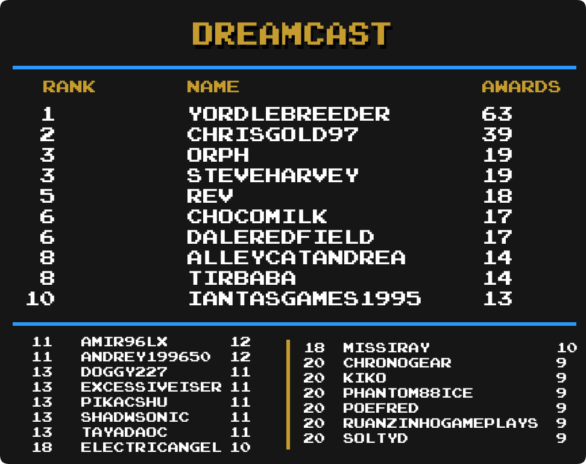
-
 Yordlebreeder remains in 1st with 63 total mastery awards.
Yordlebreeder remains in 1st with 63 total mastery awards. -
 AlleycatAndrea has moved up 3 spots and is tied for 8th place.
AlleycatAndrea has moved up 3 spots and is tied for 8th place. -
Amir96lx has moved up 1 spot and is tied for 11th place.
-
Tayadaoc has moved up 1 spot and is in a 5-way tie for 13th place.
-
 ElectricAngel has moved up 2 spots and is tied for 18th place.
ElectricAngel has moved up 2 spots and is tied for 18th place.
Elektor TV Games Computer
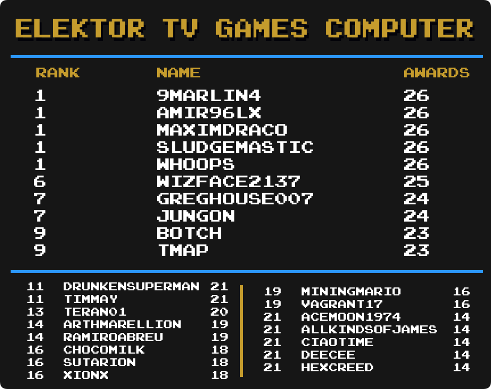
-
 9marlin4 remains in 1st with 26 total mastery awards.
9marlin4 remains in 1st with 26 total mastery awards. -
 Jungon has moved up 1 spot and is tied for 7th place.
Jungon has moved up 1 spot and is tied for 7th place. -
 DrunkenSuperman has moved up 1 spot and is tied for 11th place.
DrunkenSuperman has moved up 1 spot and is tied for 11th place. -
 arthmarellion has moved up 11 spot and is tied for 14th place.
arthmarellion has moved up 11 spot and is tied for 14th place. -
CiaoTime has made it into the top 25 and is in a 8-way tie for 21st place.
-
DeeCee has made it into the top 25 and is in a 8-way tie for 21st place.
Fairchild Channel F
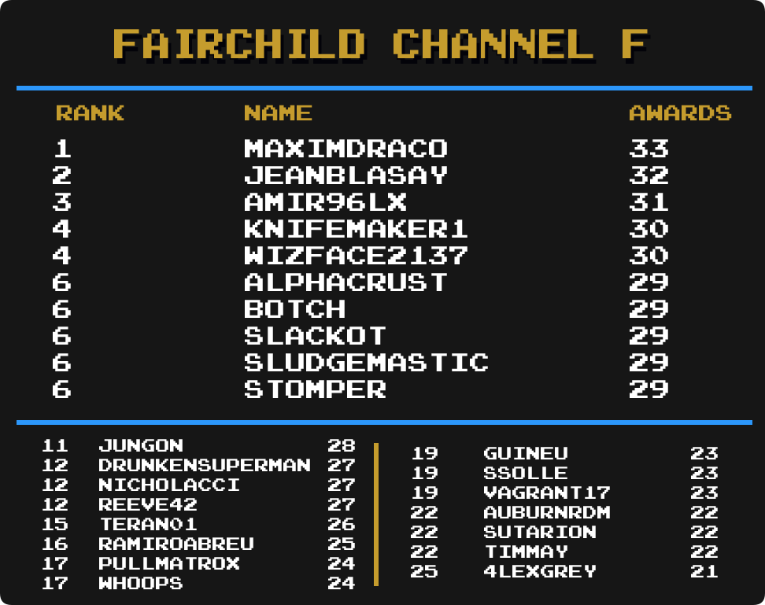
-
Maximdraco remains in 1st with 33 total mastery awards.
-
 Knifemaker1 has made it into the top 25 and is tied for 4th place.
Knifemaker1 has made it into the top 25 and is tied for 4th place.
Game Boy
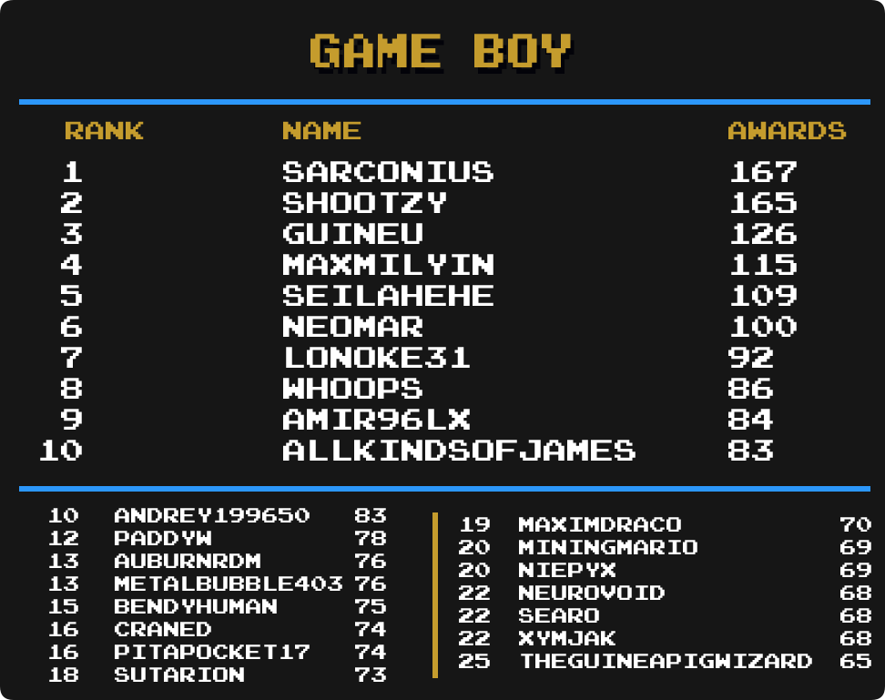
-
Sarconius remains in 1st with 167 total mastery awards.
-
 seilahehe has moved up 2 spots and is in 5th place.
seilahehe has moved up 2 spots and is in 5th place. -
Lonoke31 has moved up 1 spot and is in 7th place.
-
Whoops has moved up 3 spots and is in 8th place.
-
Amir96lx has moved up 1 spot and is in 9th place.
-
Andrey199650 has moved up 1 spot and is tied for 10th place.
-
 PaddyW has moved up 1 spot and is in 12th place.
PaddyW has moved up 1 spot and is in 12th place. -
AuburnRDM has moved up 1 spot and is tied for 13th place.
-
 metalbubble403 has moved up 1 spot and is tied for 13th place.
metalbubble403 has moved up 1 spot and is tied for 13th place. -
 Bendyhuman has moved up 1 spot and is in 15th place.
Bendyhuman has moved up 1 spot and is in 15th place. -
 CraneD has moved up 1 spot and is tied for 16th place.
CraneD has moved up 1 spot and is tied for 16th place. -
pitapocket17 has moved up 2 spots and is tied for 16th place.
-
Maximdraco has moved up 1 spot and is in 19th place.
-
MiningMario has moved up 1 spot and is tied for 20th place.
-
 Niepyx has made it into the top 25 and is tied for 20th place.
Niepyx has made it into the top 25 and is tied for 20th place. -
 NeuroVoid has moved up 1 spot and is in a 3-way tie for 22nd place.
NeuroVoid has moved up 1 spot and is in a 3-way tie for 22nd place. -
Searo has moved up 1 spot and is in a 3-way tie for 22nd place.
Game Boy Advance
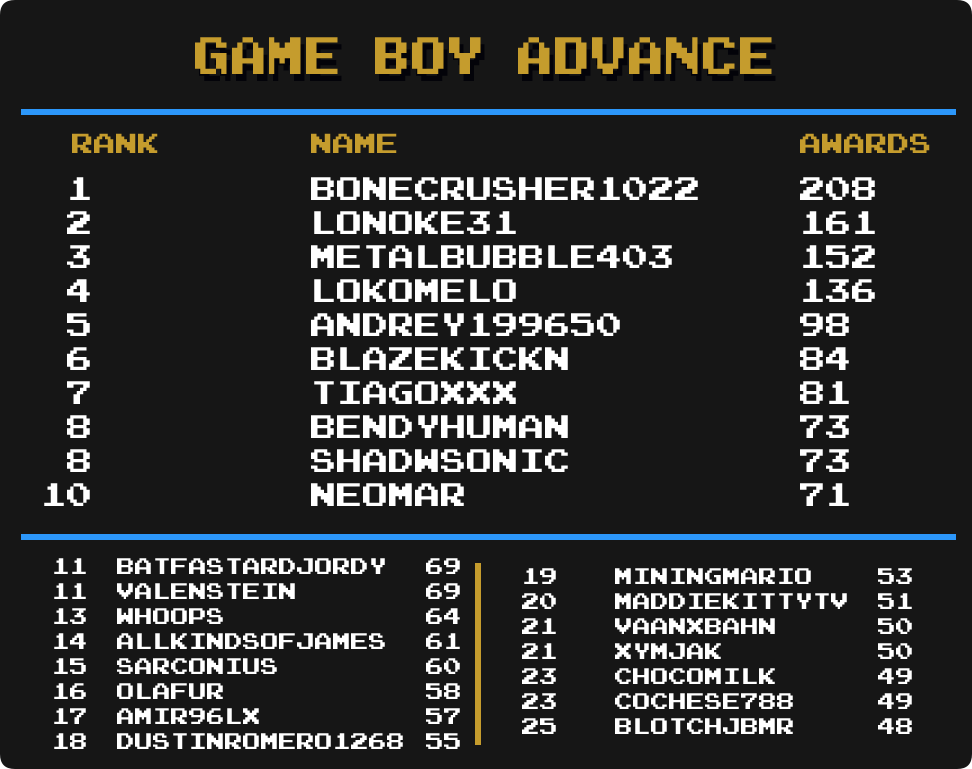
-
 bonecrusher1022 remains in 1st with 208 total mastery awards.
bonecrusher1022 remains in 1st with 208 total mastery awards. -
Bendyhuman has moved up 1 spot and is tied for 8th place.
-
 ShadwSonic has moved up 1 spot and is tied for 8th place.
ShadwSonic has moved up 1 spot and is tied for 8th place. -
NEOMAR has moved up 1 spot and is in 10th place.
-
 BatFastardJordy has moved up 1 spot and is tied for 11th place.
BatFastardJordy has moved up 1 spot and is tied for 11th place. -
 Valenstein has moved up 1 spot and is tied for 11th place.
Valenstein has moved up 1 spot and is tied for 11th place. -
Whoops has moved up 2 spots and is in 13th place.
-
Sarconius has moved up 2 spots and is in 15th place.
-
Amir96lx has moved up 1 spot and is in 17th place.
-
 DustinRomero1268 has moved up 1 spot and is in 18th place.
DustinRomero1268 has moved up 1 spot and is in 18th place. -
MiningMario has moved up 1 spot and is in 19th place.
-
MaddieKittyTV has moved up 1 spot and is in 20th place.
-
vaanxbahn has made it into the top 25 and is tied for 21st place.
-
 Xymjak has moved up 2 spots and is tied for 21st place.
Xymjak has moved up 2 spots and is tied for 21st place.
Game Boy Color
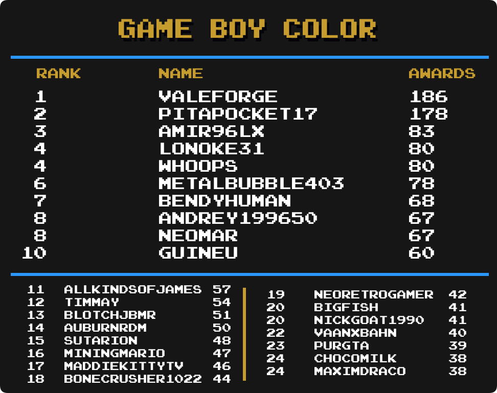
-
 valeforge has taken 1st place with 186 total mastery awards.
valeforge has taken 1st place with 186 total mastery awards. -
Lonoke31 has moved up 2 spots and is tied for 4th place.
-
MiningMario has moved up 1 spot and is in 16th place.
-
NeoRetroGamer has moved up 3 spots and is in 19th place.
-
vaanxbahn has made it into the top 25 and is in 22nd place.
-
 Purgta has made it into the top 25 and is in 23rd place.
Purgta has made it into the top 25 and is in 23rd place. -
ChocoMilk has made it into the top 25 and is in a 3-way tie for 24th place.
Game Gear
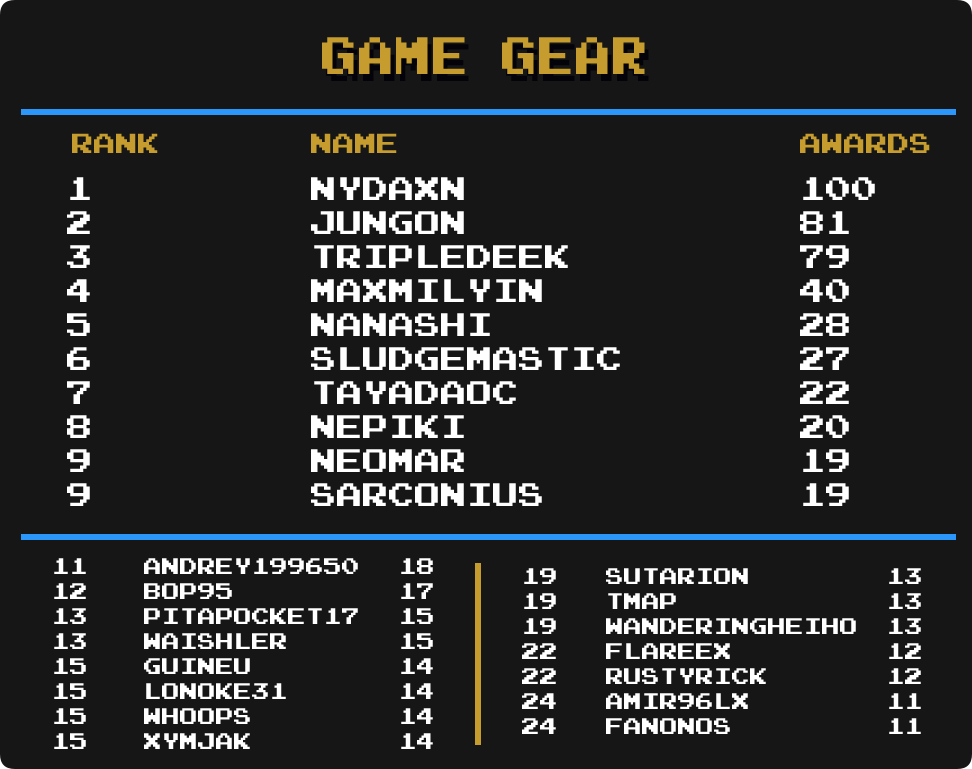
-
Nydaxn remains in 1st with 100 total mastery awards.
-
NEOMAR has moved up 3 spots and is tied for 9th place.
-
 BOP95 has moved up 1 spot and is in 12th place.
BOP95 has moved up 1 spot and is in 12th place. -
pitapocket17 has moved up 1 spot and is tied for 13th place.
-
 Waishler has moved up 1 spot and is tied for 13th place.
Waishler has moved up 1 spot and is tied for 13th place. -
 guineu has moved up 1 spot and is in a 4-way tie for 15th place.
guineu has moved up 1 spot and is in a 4-way tie for 15th place. -
Lonoke31 has moved up 1 spot and is in a 4-way tie for 15th place.
-
Whoops has moved up 1 spot and is in a 4-way tie for 15th place.
-
Xymjak has moved up 5 spots and is in a 4-way tie for 15th place.
-
 RustyRick has made it into the top 25 and is tied for 22nd place.
RustyRick has made it into the top 25 and is tied for 22nd place.
GameCube
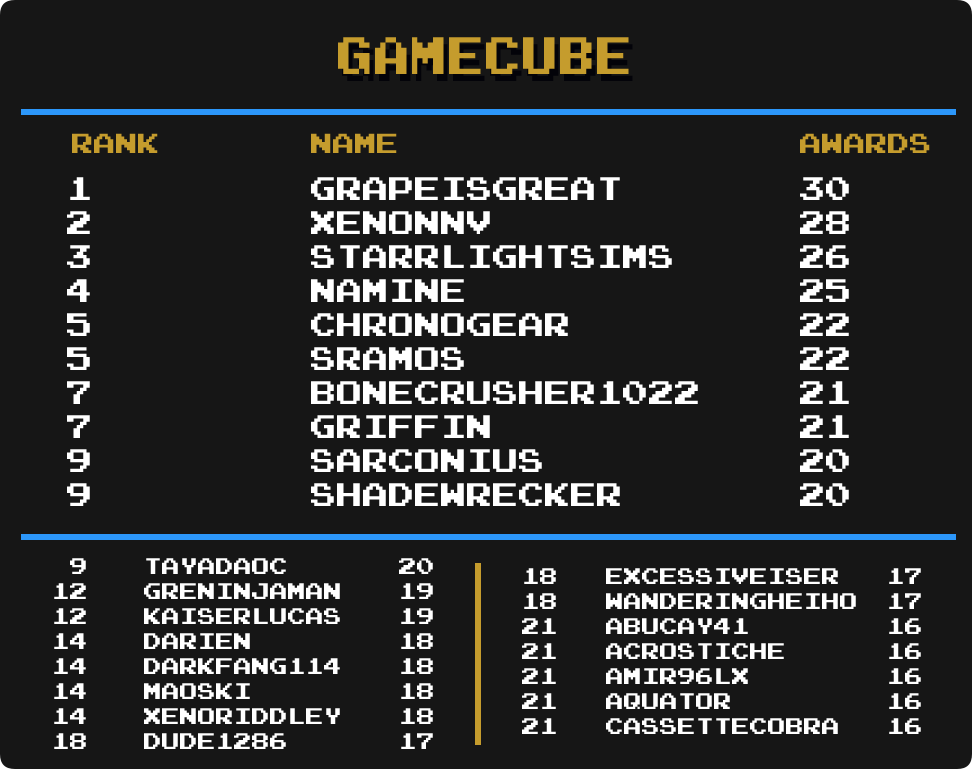
-
 grapeisgreat remains in 1st with 30 total mastery awards.
grapeisgreat remains in 1st with 30 total mastery awards. -
 StarrlightSims has moved up 1 spot and is in 3rd place.
StarrlightSims has moved up 1 spot and is in 3rd place. -
bonecrusher1022 has moved up 2 spots and is tied for 7th place.
-
 Griffin has moved up 2 spots and is tied for 7th place.
Griffin has moved up 2 spots and is tied for 7th place. -
Sarconius has moved up 4 spots and is in a 3-way tie for 9th place.
-
GreninjaMan has moved up 10 spots and is tied for 12th place.
-
 Darien has moved up 6 spots and is in a 4-way tie for 14th place.
Darien has moved up 6 spots and is in a 4-way tie for 14th place. -
 Darkfang114 has moved up 6 spots and is in a 4-way tie for 14th place.
Darkfang114 has moved up 6 spots and is in a 4-way tie for 14th place. -
 dude1286 has made it into the top 25 and is in a 3-way tie for 18th place.
dude1286 has made it into the top 25 and is in a 3-way tie for 18th place. -
 Abucay41 has made it into the top 25 and is in a 10-way tie for 21st place.
Abucay41 has made it into the top 25 and is in a 10-way tie for 21st place. -
CassetteCobra has made it into the top 25 and is in a 10-way tie for 21st place.
Interton VC 4000
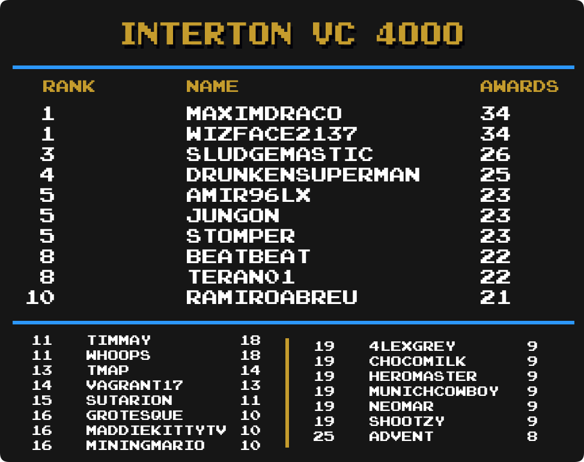
-
Maximdraco has taken 1st place with 34 total mastery awards.
-
Amir96lx has moved up 3 spots and is in a 3-way tie for 5th place.
-
beatbeat has moved up 5 spots and is tied for 8th place.
-
 HeroMaster has made it into the top 25 and is in a 6-way tie for 19th place.
HeroMaster has made it into the top 25 and is in a 6-way tie for 19th place. -
NEOMAR has made it into the top 25 and is in a 6-way tie for 19th place.
Master System
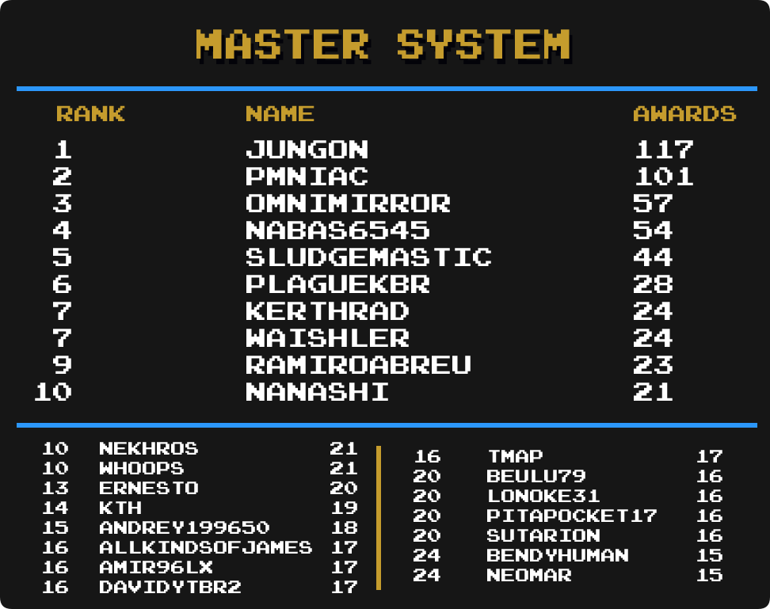
-
Jungon remains in 1st with 117 total mastery awards.
-
 OmniMirror has moved up 1 spot and is in 3rd place.
OmniMirror has moved up 1 spot and is in 3rd place. -
 Kerthrad has moved up 2 spots and is tied for 7th place.
Kerthrad has moved up 2 spots and is tied for 7th place. -
Nanashi has moved up 3 spots and is in a 3-way tie for 10th place.
-
Lonoke31 has moved up 2 spots and is in a 4-way tie for 20th place.
-
Sutarion has made it into the top 25 and is in a 4-way tie for 20th place.
Mega Drive
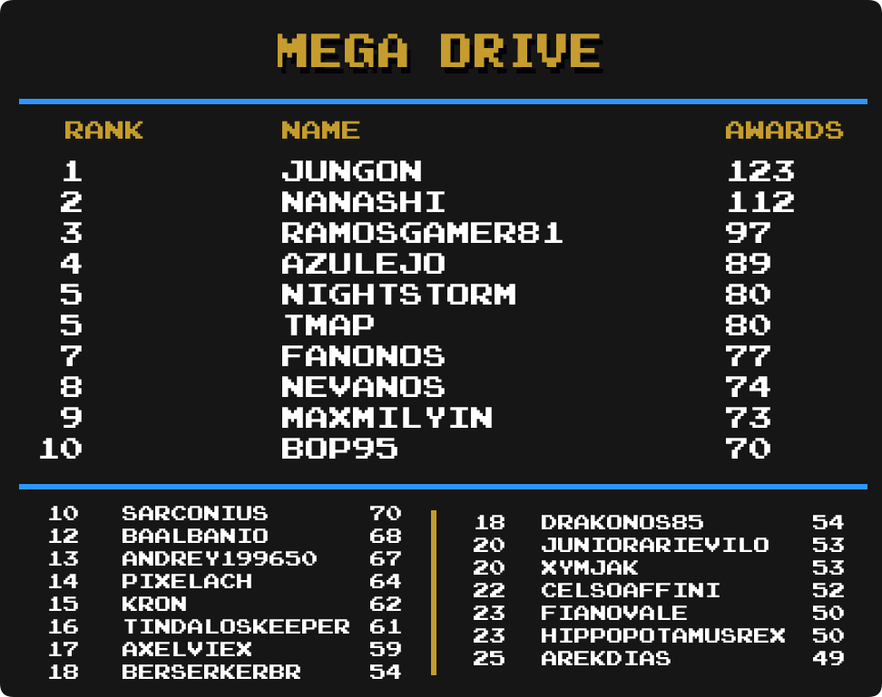
-
Jungon has taken 1st place with 123 total mastery awards.
-
Nanashi has moved up 1 spot and is in 2nd place.
-
ramosgamer81 has moved up 1 spot and is in 3rd place.
-
 azulejo has moved up 1 spot and is in 4th place.
azulejo has moved up 1 spot and is in 4th place. -
 Nightstorm has moved up 1 spot and is tied for 5th place.
Nightstorm has moved up 1 spot and is tied for 5th place. -
 tmap has moved up 1 spot and is tied for 5th place.
tmap has moved up 1 spot and is tied for 5th place. -
 Fanonos has moved up 1 spot and is in 7th place.
Fanonos has moved up 1 spot and is in 7th place. -
 Nevanos has moved up 1 spot and is in 8th place.
Nevanos has moved up 1 spot and is in 8th place. -
 MaxMilyin has moved up 1 spot and is in 9th place.
MaxMilyin has moved up 1 spot and is in 9th place. -
BOP95 has moved up 1 spot and is tied for 10th place.
-
Sarconius has moved up 1 spot and is tied for 10th place.
-
 Baalbanio has moved up 7 spots and is in 12th place.
Baalbanio has moved up 7 spots and is in 12th place. -
 Kron has moved up 1 spot and is in 15th place.
Kron has moved up 1 spot and is in 15th place. -
 TindalosKeeper has moved up 1 spot and is in 16th place.
TindalosKeeper has moved up 1 spot and is in 16th place. -
 AxelViex has moved up 1 spot and is in 17th place.
AxelViex has moved up 1 spot and is in 17th place. -
 BerserkerBR has moved up 2 spots and is tied for 18th place.
BerserkerBR has moved up 2 spots and is tied for 18th place. -
 drakonos85 has moved up 2 spots and is tied for 18th place.
drakonos85 has moved up 2 spots and is tied for 18th place. -
 JuniorArievilo has moved up 2 spots and is tied for 20th place.
JuniorArievilo has moved up 2 spots and is tied for 20th place. -
Xymjak has moved up 2 spots and is tied for 20th place.
-
 celsoaffini has moved up 2 spots and is in 22nd place.
celsoaffini has moved up 2 spots and is in 22nd place. -
 fianovale has moved up 2 spots and is tied for 23rd place.
fianovale has moved up 2 spots and is tied for 23rd place. -
 HippopotamusRex has made it into the top 25 and is tied for 23rd place.
HippopotamusRex has made it into the top 25 and is tied for 23rd place. -
 Arekdias has made it into the top 25 and is in a 3-way tie for 25th place.
Arekdias has made it into the top 25 and is in a 3-way tie for 25th place.
Mega Duck
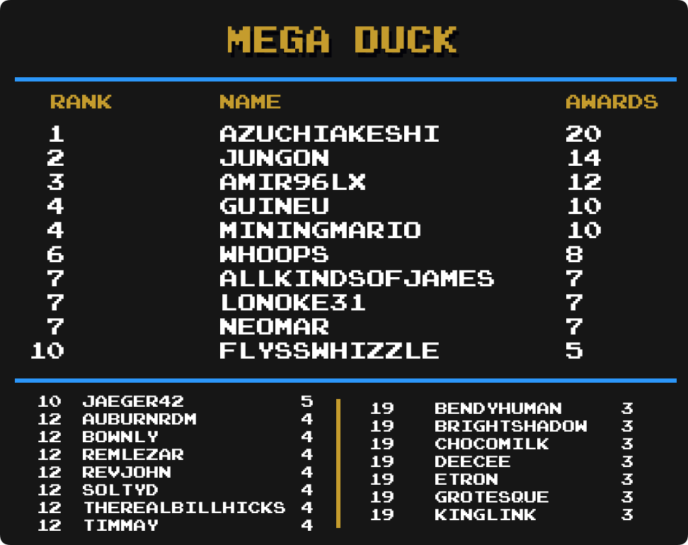
-
 AzuchiAkeshi remains in 1st with 20 total mastery awards.
AzuchiAkeshi remains in 1st with 20 total mastery awards. -
ChocoMilk has made it into the top 25 and is in a 17-way tie for 19th place.
-
DeeCee has made it into the top 25 and is in a 17-way tie for 19th place.
Nintendo 64
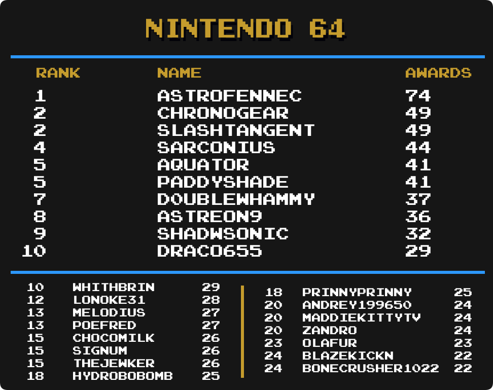
-
AstroFennec remains in 1st with 74 total mastery awards.
-
ChocoMilk has made it into the top 25 and is in a 3-way tie for 15th place.
NES
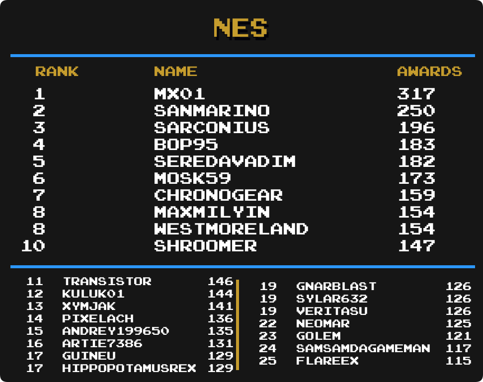
-
 mx01 remains in 1st with 317 total mastery awards.
mx01 remains in 1st with 317 total mastery awards. -
MaxMilyin has moved up 1 spot and is tied for 8th place.
-
 Shroomer has moved up 3 spots and is in 10th place.
Shroomer has moved up 3 spots and is in 10th place. -
Pixelach has moved up 2 spots and is in 14th place.
-
 gnarblast has moved up 2 spots and is in a 3-way tie for 19th place.
gnarblast has moved up 2 spots and is in a 3-way tie for 19th place.
Nintendo DS
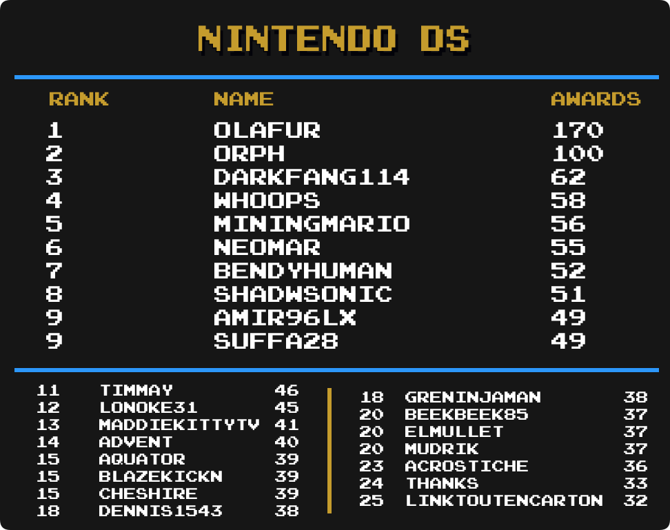
-
 Olafur remains in 1st with 170 total mastery awards.
Olafur remains in 1st with 170 total mastery awards. -
 Suffa28 has moved up 1 spot and is tied for 9th place.
Suffa28 has moved up 1 spot and is tied for 9th place. -
Timmay has moved up 1 spot and is in 11th place.
-
Blazekickn has moved up 3 spots and is in a 3-way tie for 15th place.
-
 BeekBeek85 has moved up 2 spots and is in a 3-way tie for 20th place.
BeekBeek85 has moved up 2 spots and is in a 3-way tie for 20th place. -
ElMullet has made it into the top 25 and is in a 3-way tie for 20th place.
Nintendo DSi
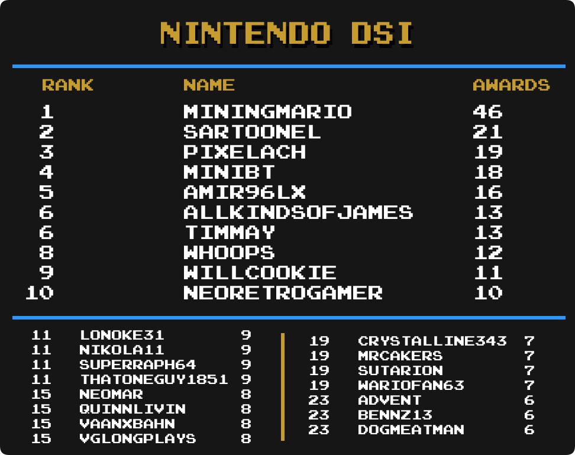
-
MiningMario remains in 1st with 46 total mastery awards.
-
 minibt has moved up 2 spots and is in 4th place.
minibt has moved up 2 spots and is in 4th place. -
 quinnlivin has moved up 4 spots and is in a 4-way tie for 15th place.
quinnlivin has moved up 4 spots and is in a 4-way tie for 15th place.
PC Engine
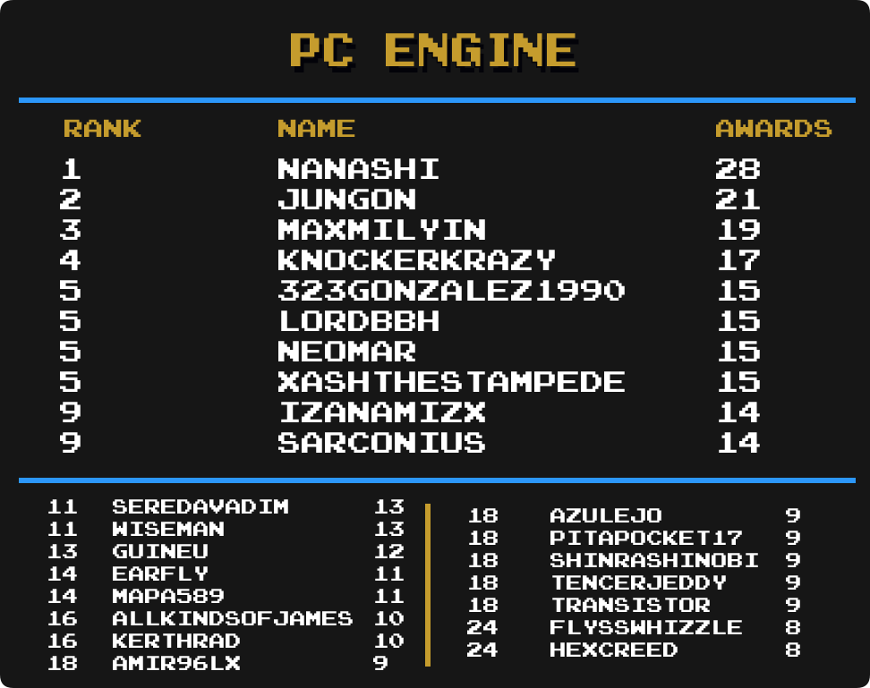
-
Nanashi remains in 1st with 28 total mastery awards.
-
Kerthrad has moved up 2 spots and is tied for 16th place.
-
 Shinrashinobi has made it into the top 25 and is in a 6-way tie for 18th place.
Shinrashinobi has made it into the top 25 and is in a 6-way tie for 18th place. -
 FlyssWhizzle has made it into the top 25 and is in a 6-way tie for 24th place.
FlyssWhizzle has made it into the top 25 and is in a 6-way tie for 24th place.
PC Engine CD
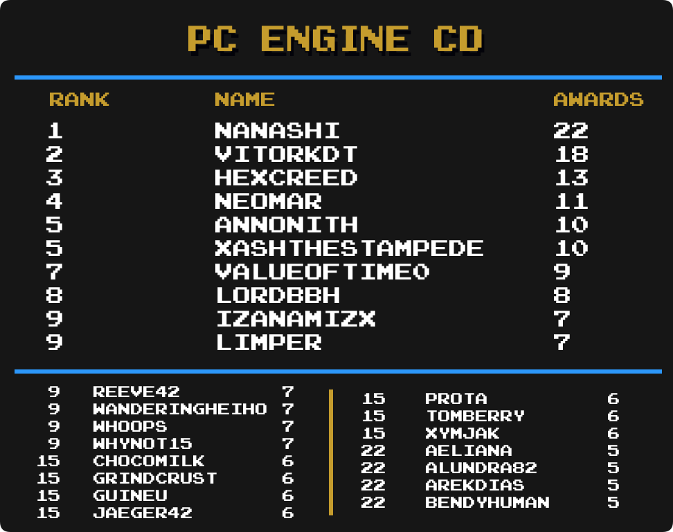
-
Nanashi remains in 1st with 22 total mastery awards.
-
 Reeve42 has moved up 8 spots and is in a 6-way tie for 9th place.
Reeve42 has moved up 8 spots and is in a 6-way tie for 9th place. -
 Aeliana has made it into the top 25 and is in a 14-way tie for 22nd place.
Aeliana has made it into the top 25 and is in a 14-way tie for 22nd place.
PC-8000/8800
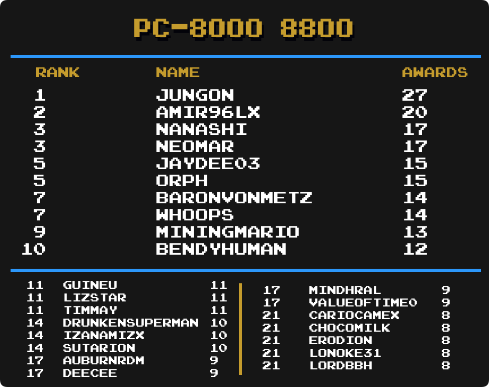
-
Jungon remains in 1st with 27 total mastery awards.
-
NEOMAR has moved up 2 spots and is tied for 3rd place.
-
jaydee03 has moved up 4 spots and is tied for 5th place.
-
MiningMario has moved up 4 spots and is in 9th place.
-
Timmay has moved up 2 spots and is in a 3-way tie for 11th place.
-
DrunkenSuperman has made it into the top 25 and is in a 3-way tie for 14th place.
-
Sutarion has made it into the top 25 and is in a 3-way tie for 14th place.
-
DeeCee has moved up 5 spots and is in a 4-way tie for 17th place.
-
 Mindhral has moved up 1 spot and is in a 4-way tie for 17th place.
Mindhral has moved up 1 spot and is in a 4-way tie for 17th place. -
 ValueOfTime0 has moved up 1 spot and is in a 4-way tie for 17th place.
ValueOfTime0 has moved up 1 spot and is in a 4-way tie for 17th place. -
 CariocaMEX has made it into the top 25 and is in a 7-way tie for 21st place.
CariocaMEX has made it into the top 25 and is in a 7-way tie for 21st place. -
ChocoMilk has made it into the top 25 and is in a 7-way tie for 21st place.
-
Lonoke31 has made it into the top 25 and is in a 7-way tie for 21st place.
PlayStation
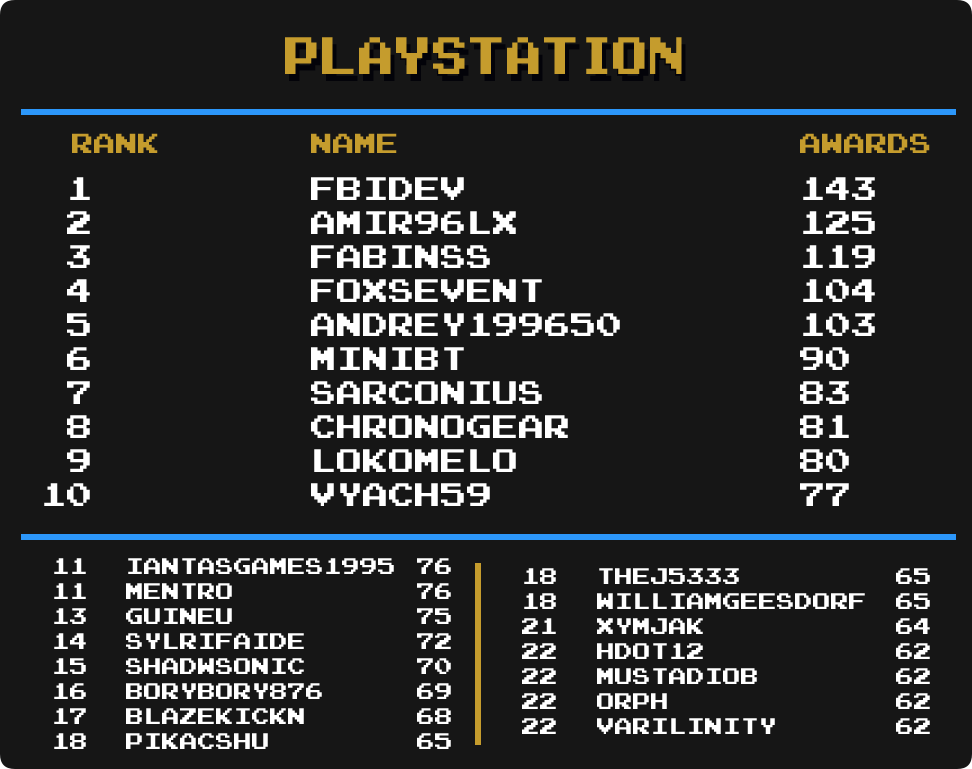
-
 FBiDev remains in 1st with 143 total mastery awards.
FBiDev remains in 1st with 143 total mastery awards. -
Sarconius has moved up 1 spot and is in 7th place.
-
 ChronoGear has moved up 1 spot and is in 8th place.
ChronoGear has moved up 1 spot and is in 8th place. -
 IantasGames1995 has moved up 2 spots and is tied for 11th place.
IantasGames1995 has moved up 2 spots and is tied for 11th place. -
ShadwSonic has moved up 1 spot and is in 15th place.
-
 Pikacshu has made it into the top 25 and is in a 3-way tie for 18th place.
Pikacshu has made it into the top 25 and is in a 3-way tie for 18th place.
PlayStation 2
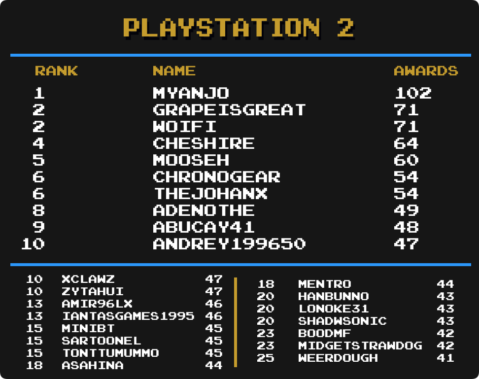
-
 Myanjo remains in 1st with 102 total mastery awards.
Myanjo remains in 1st with 102 total mastery awards. -
 Mooseh has moved up 1 spot and is in 5th place.
Mooseh has moved up 1 spot and is in 5th place. -
ChronoGear has moved up 1 spot and is tied for 6th place.
-
Andrey199650 has moved up 5 spots and is in a 3-way tie for 10th place.
-
 Mentro has moved up 1 spot and is tied for 18th place.
Mentro has moved up 1 spot and is tied for 18th place. -
Lonoke31 has moved up 2 spots and is in a 3-way tie for 20th place.
-
ShadwSonic has moved up 2 spots and is in a 3-way tie for 20th place.
-
 WeerDough has made it into the top 25 and is in 25th place.
WeerDough has made it into the top 25 and is in 25th place.
PlayStation Portable
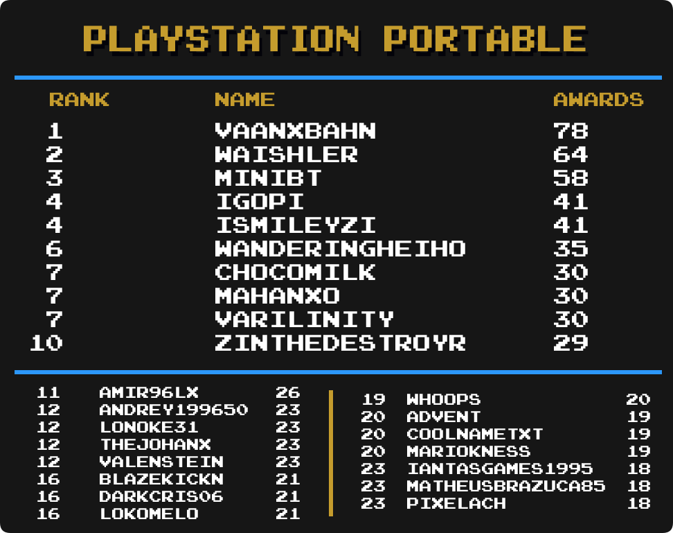
-
vaanxbahn remains in 1st with 78 total mastery awards.
-
 igopi has moved up 1 spot and is tied for 4th place.
igopi has moved up 1 spot and is tied for 4th place. -
ChocoMilk has moved up 2 spots and is in a 3-way tie for 7th place.
-
 Varilinity has moved up 2 spots and is in a 3-way tie for 7th place.
Varilinity has moved up 2 spots and is in a 3-way tie for 7th place. -
Lonoke31 has moved up 4 spots and is in a 4-way tie for 12th place.
-
Blazekickn has moved up 4 spots and is in a 3-way tie for 16th place.
-
IantasGames1995 has made it into the top 25 and is in a 3-way tie for 23rd place.
-
Pixelach has made it into the top 25 and is in a 3-way tie for 23rd place.
Pokémon Mini
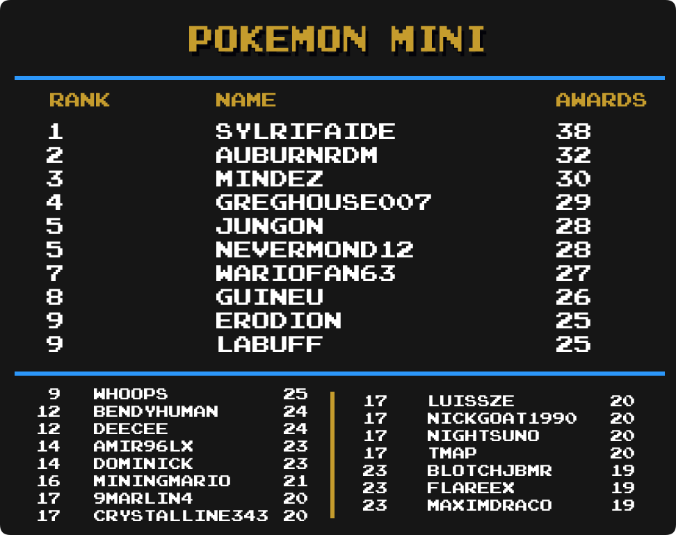
-
Sylrifaide remains in 1st with 38 total mastery awards.
-
9marlin4 has made it into the top 25 and is in a 6-way tie for 17th place.
Sega Saturn
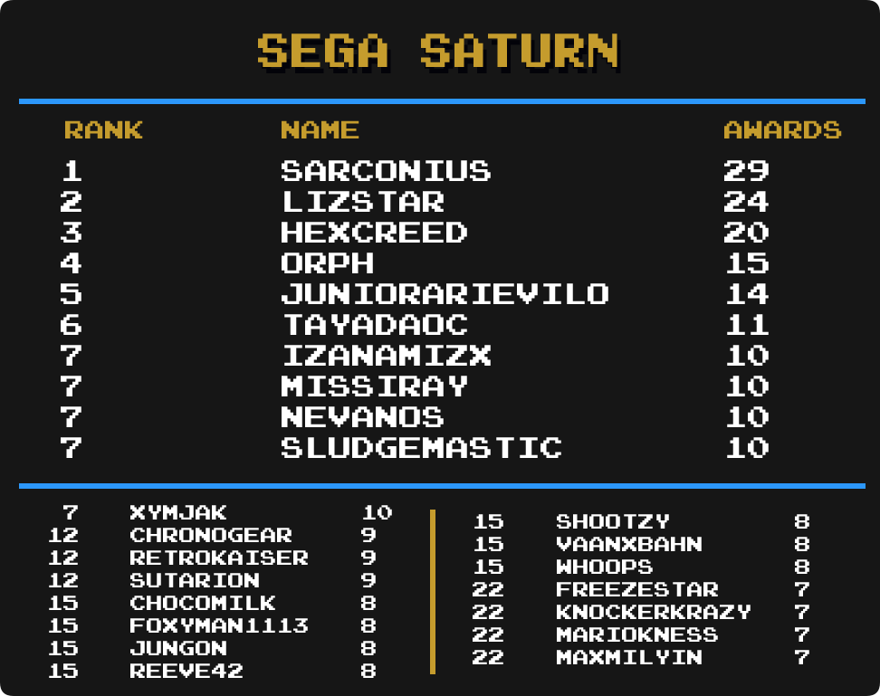
-
Sarconius remains in 1st with 29 total mastery awards.
-
Nevanos has moved up 3 spots and is in a 5-way tie for 7th place.
-
Sutarion has moved up 3 spots and is in a 3-way tie for 12th place.
-
 Foxyman1113 has moved up 4 spots and is in a 7-way tie for 15th place.
Foxyman1113 has moved up 4 spots and is in a 7-way tie for 15th place. -
Reeve42 has made it into the top 25 and is in a 7-way tie for 15th place.
-
 KnockerKrazy has made it into the top 25 and is in a 10-way tie for 22nd place.
KnockerKrazy has made it into the top 25 and is in a 10-way tie for 22nd place.
Sega CD
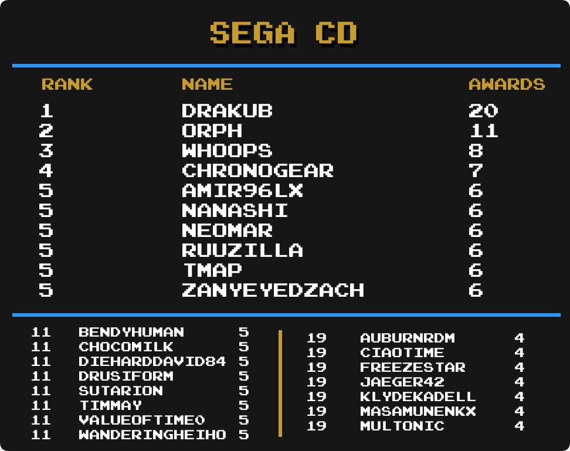
-
 Drakub remains in 1st with 20 total mastery awards.
Drakub remains in 1st with 20 total mastery awards. -
Whoops has moved up 1 spot and is in 3rd place.
-
Nanashi has moved up 8 spots and is in a 6-way tie for 5th place.
-
ValueOfTime0 has made it into the top 25 and is in a 8-way tie for 11th place.
SG-1000
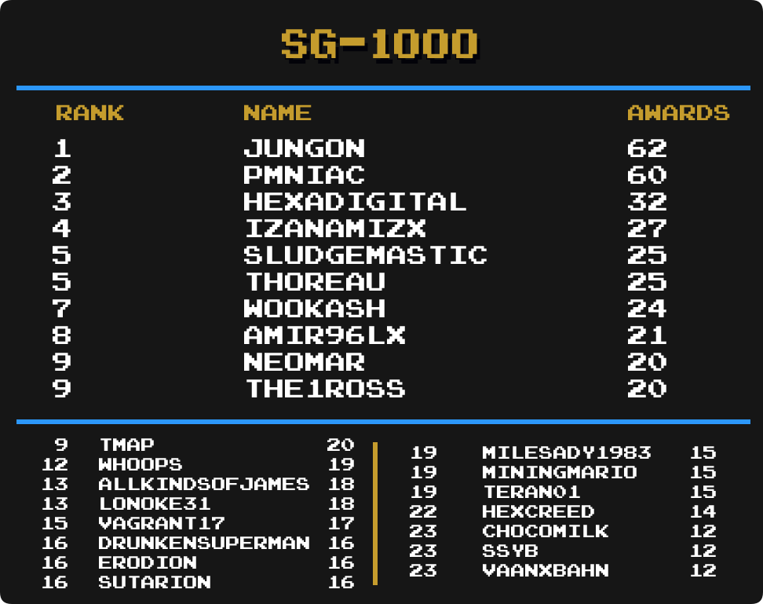
-
Jungon remains in 1st with 62 total mastery awards.
-
Sutarion has moved up 2 spots and is in a 3-way tie for 16th place.
-
 Teran01 has moved up 3 spots and is in a 3-way tie for 19th place.
Teran01 has moved up 3 spots and is in a 3-way tie for 19th place.
SNES
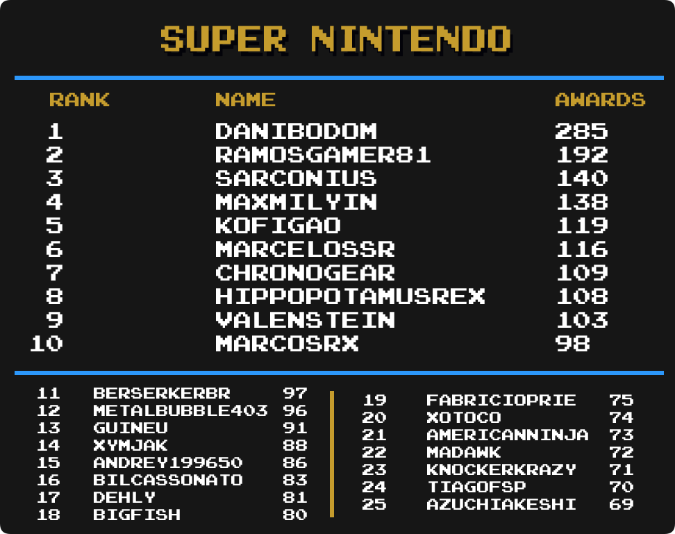
-
 danibodom remains in 1st with 285 total mastery awards.
danibodom remains in 1st with 285 total mastery awards. -
ramosgamer81 has moved up 1 spot and is in 2nd place.
-
Sarconius has moved up 1 spot and is in 3rd place.
-
MaxMilyin has moved up 1 spot and is in 4th place.
-
Kofigao has moved up 2 spots and is in 5th place.
-
ChronoGear has moved up 2 spots and is in 7th place.
-
HippopotamusRex has moved up 2 spots and is in 8th place.
-
Valenstein has moved up 2 spots and is in 9th place.
-
 MarcosRx has moved up 2 spots and is in 10th place.
MarcosRx has moved up 2 spots and is in 10th place. -
BerserkerBR has moved up 2 spots and is in 11th place.
-
metalbubble403 has moved up 2 spots and is in 12th place.
-
guineu has moved up 2 spots and is in 13th place.
-
Xymjak has moved up 2 spots and is in 14th place.
-
Andrey199650 has moved up 2 spots and is in 15th place.
-
 bilcassonato has moved up 2 spots and is in 16th place.
bilcassonato has moved up 2 spots and is in 16th place. -
 Dehly has moved up 2 spots and is in 17th place.
Dehly has moved up 2 spots and is in 17th place. -
 BigFish has moved up 2 spots and is in 18th place.
BigFish has moved up 2 spots and is in 18th place. -
 FabricioPrie has moved up 2 spots and is in 19th place.
FabricioPrie has moved up 2 spots and is in 19th place. -
 Xotoco has moved up 2 spots and is in 20th place.
Xotoco has moved up 2 spots and is in 20th place. -
 AmericanNinja has moved up 2 spots and is in 21st place.
AmericanNinja has moved up 2 spots and is in 21st place. -
 Madawk has moved up 2 spots and is in 22nd place.
Madawk has moved up 2 spots and is in 22nd place. -
KnockerKrazy has moved up 2 spots and is in 23rd place.
-
 Tiagofsp has made it into the top 25 and is in 24th place.
Tiagofsp has made it into the top 25 and is in 24th place. -
AzuchiAkeshi has made it into the top 25 and is tied for 25th place.
Uzebox
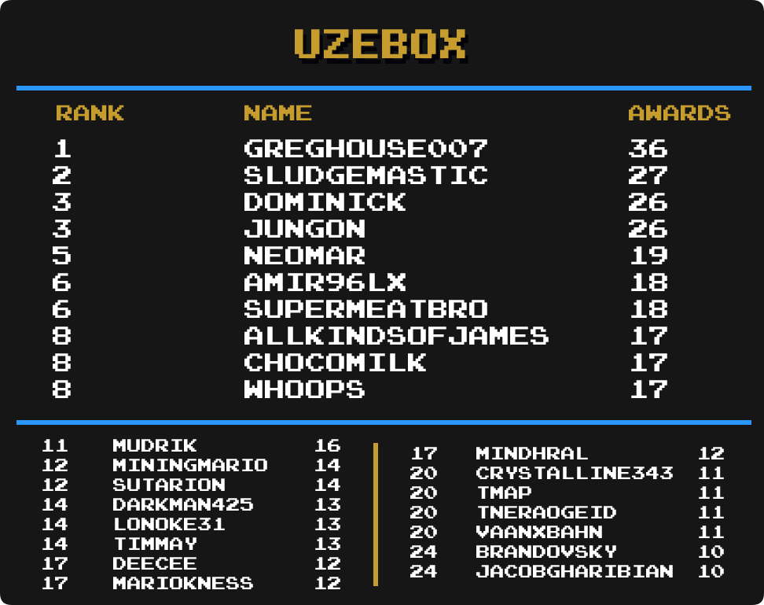
-
GregHouse007 remains in 1st with 36 total mastery awards.
-
sludgemastic has moved up 1 spot and is in 2nd place.
-
Dominick has moved up 1 spot and is tied for 3rd place.
-
NEOMAR has moved up 3 spots and is in 5th place.
-
ChocoMilk has moved up 2 spots and is in a 3-way tie for 8th place.
-
Sutarion has moved up 2 spots and is tied for 12th place.
-
DeeCee has made it into the top 25 and is in a 3-way tie for 17th place.
-
 Crystalline343 has moved up 2 spots and is in a 4-way tie for 20th place.
Crystalline343 has moved up 2 spots and is in a 4-way tie for 20th place. -
vaanxbahn has moved up 1 spot and is in a 4-way tie for 20th place.
Virtual Boy
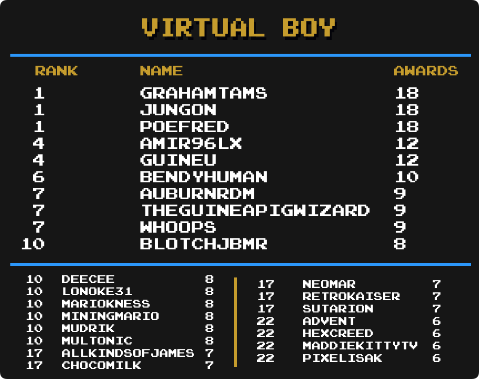
-
 Grahamtams remains in 1st with 18 total mastery awards.
Grahamtams remains in 1st with 18 total mastery awards. -
ChocoMilk has moved up 3 spots and is in a 5-way tie for 17th place.
-
NEOMAR has moved up 5 spots and is in a 5-way tie for 17th place.
-
 pixelisak has made it into the top 25 and is in a 6-way tie for 22nd place.
pixelisak has made it into the top 25 and is in a 6-way tie for 22nd place.
WASM-4
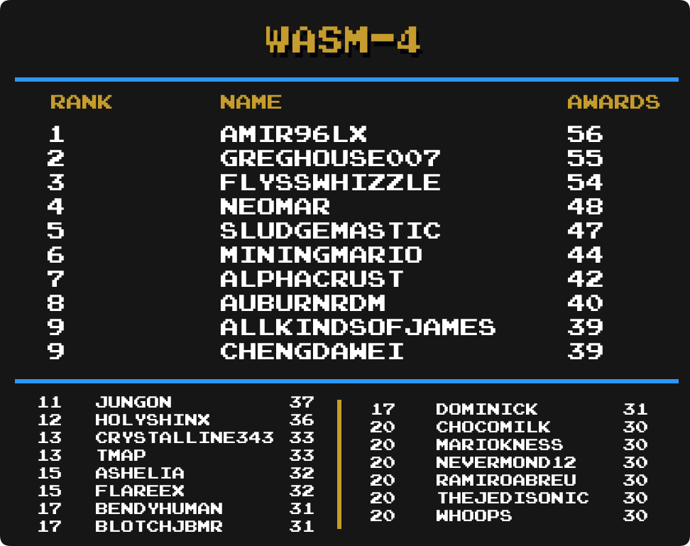
-
Amir96lx remains in 1st with 56 total mastery awards.
-
GregHouse007 has moved up 1 spot and is in 2nd place.
-
HolyShinx has made it into the top 25 and is in 12th place.
-
Crystalline343 has moved up 1 spot and is tied for 13th place.
-
ChocoMilk has moved up 3 spots and is in a 6-way tie for 20th place.
-
ramiroabreu has made it into the top 25 and is in a 6-way tie for 20th place.
Watara Supervision
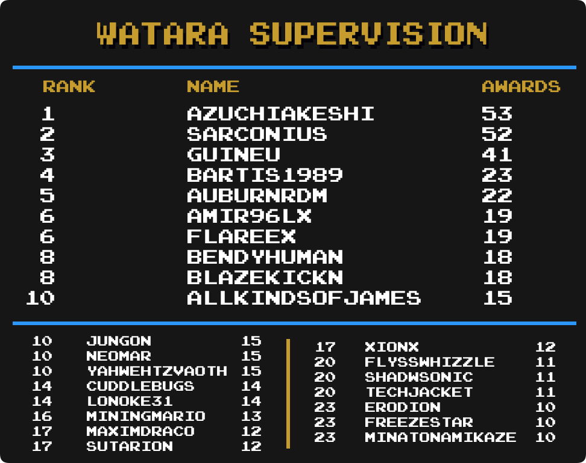
-
AzuchiAkeshi remains in 1st with 53 total mastery awards.
-
Amir96lx has moved up 1 spot and is tied for 6th place.
-
 MinatoNamikaze has made it into the top 25 and is in a 4-way tie for 23rd place.
MinatoNamikaze has made it into the top 25 and is in a 4-way tie for 23rd place.